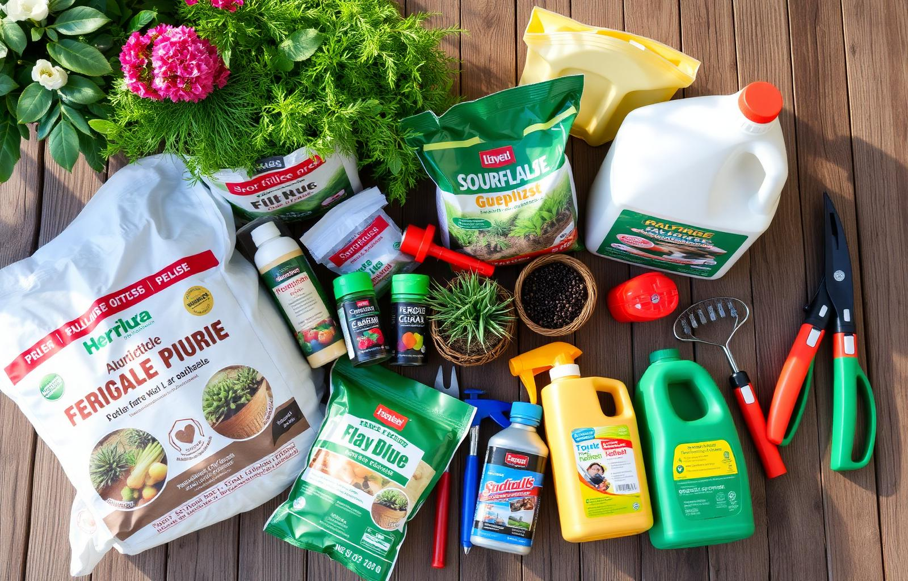

KATALOG PRODUK
Lengkap dari hulu ke hilir.
Ratusan produk pertanian, perkebunan, dan peternakan tersedia di Golden Agro.
01
Bibit & Benih
- Padi unggul
- Jagung hibrida
- Sayuran
- Cabai & tomat
- Buah-buahan
02
Pupuk & Nutrisi
- NPK Mutiara
- NPK Yaramila
- Pupuk ZA
- Pupuk Daun
- Pupuk Organik
03
Pestisida
- Insektisida
- Fungisida
- Herbisida
- Akarisida
- ZPT
04
Alat Pertanian
- Sprayer
- Cangkul & sabit
- Selang & nozzle
- Mesin potong
- Perlengkapan panen
05
Pakan Ternak
- Pakan ayam
- Pakan sapi
- Pakan kambing
- Pakan ikan
- Vitamin ternak
06
Nutrisi Khusus
- Hormon tanaman
- Bio stimulan
- Pupuk hidroponik
- Pupuk MKP
- Kalsium boron

Kualitas premium, harga kompetitif.
Mitra Brand
Dipercaya oleh produsen ternama
Petrokimia
Yara
Syngenta
Bayer
Meroke
BASF
Nufarm
FMC
DuPont
BISI